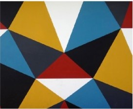

HOME
ONEZERO
ELEMENTAL
GEN
ZORA
FORGE
HUMAN PARTS
MARKER
LEVEL
HEATED
DESIGN
MO
POPULAR ON MEDIUM
Commonly Used Design Patterns in JavaScript
A look at the singleton,iterator,and factory patterns
John Au-Yeung in Better Programming
Feb 24 · 4 min read
★
BASED ON YOUR READING HISTORY
Why Your App Looks Better in Sketch
Exploring rendering differences between Sketch and iOS
Nathan Gitter
Jan 31,2018 · 6 min read
BASED ON YOUR READING HISTORY
JavaScript Bundlers,a Comparison
How do JavaScript bundlers stack up against each other?
AJ Meyghani
Oct 28,2018 · 27 min read
★

Popular on Medium
01
02
03
How to Distinguish Between a
Public Safety Crisis and a
Personal Anxiety
Imani Bashir in Forge
Mar 3 · 4 min read
★
There's an Epidemic That's a
Bigger Threat Than the
Coronavirus
Dr.David L.Katz in Heated
Feb 29 · 8 min read
★
The Flawed,Twisted Legacy of
Jack Welch
Rob Walker in Marker
Mar 3 · 4 min read
★